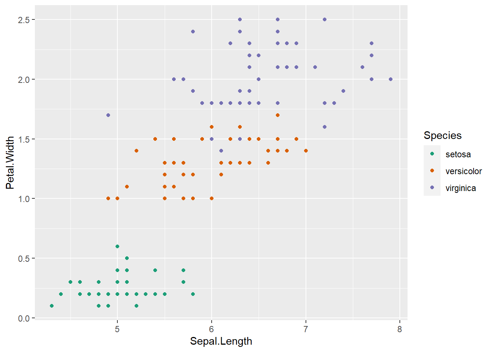
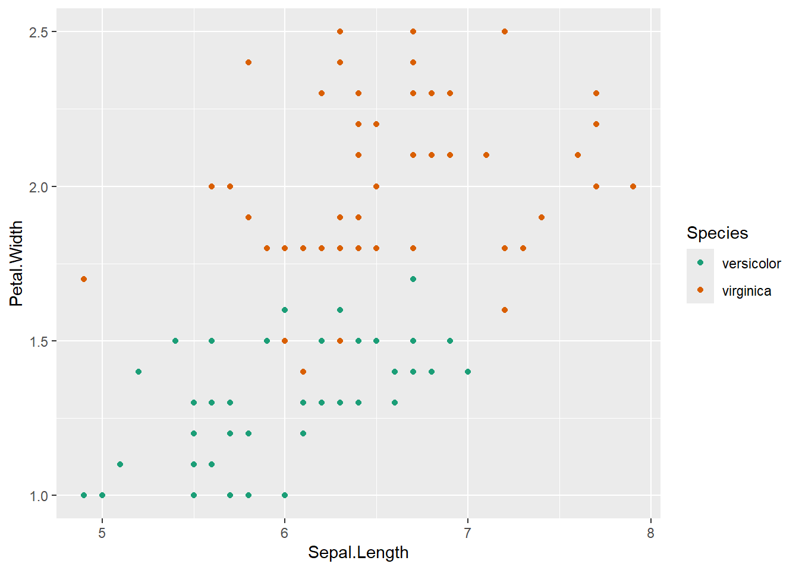
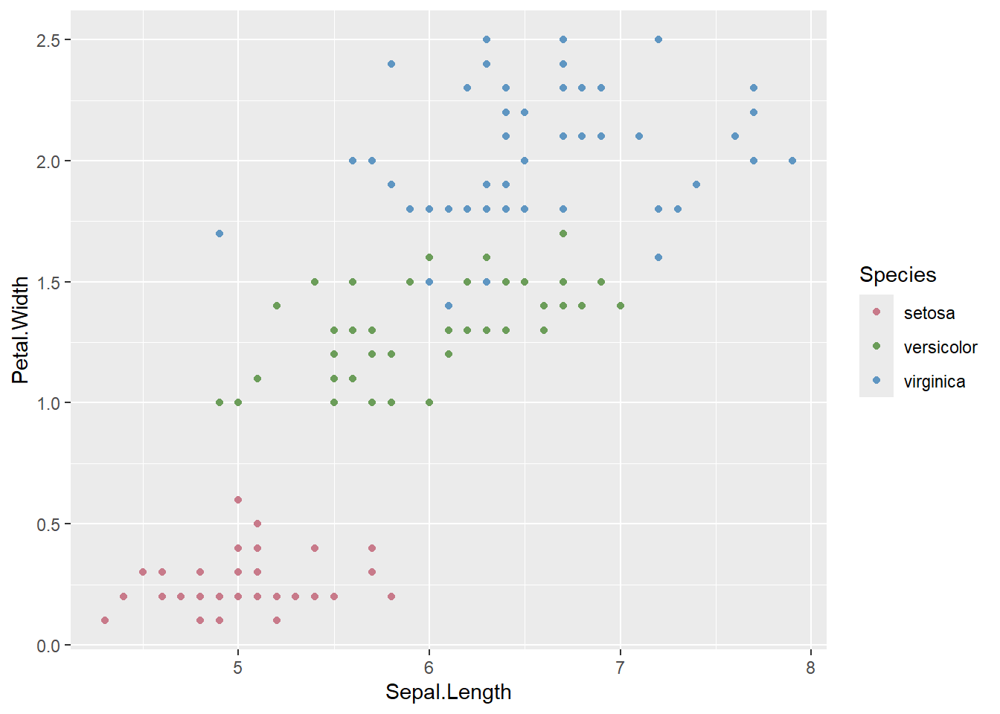
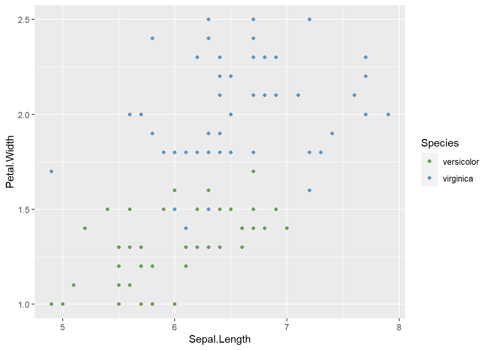
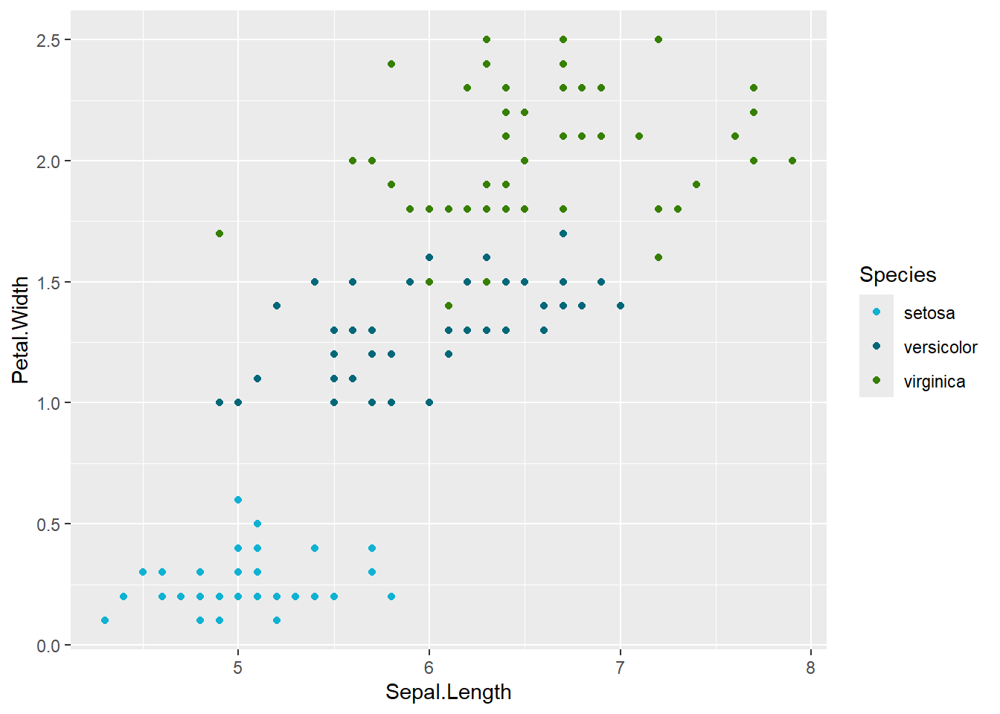
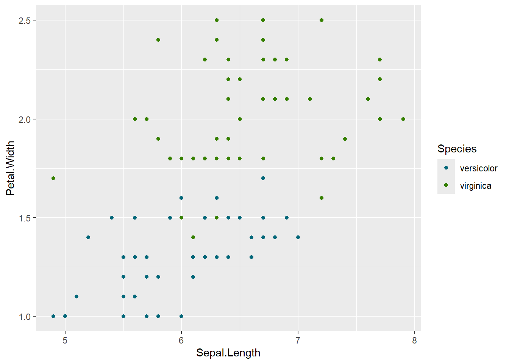
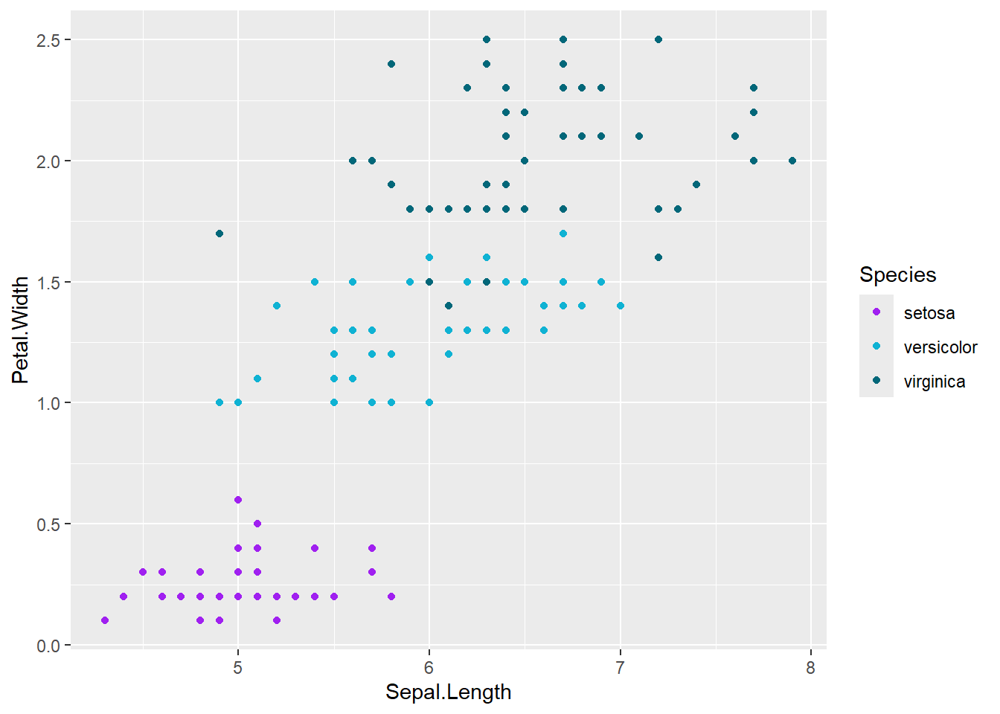
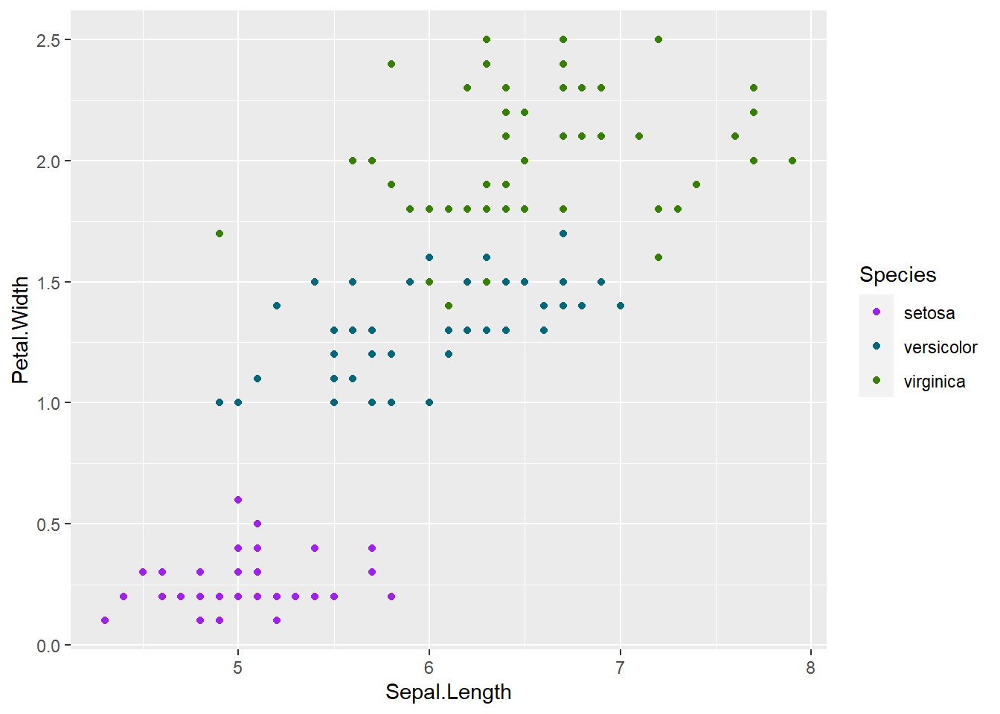

library(ggplot2)Setting colors for groups
The issue
I often want the same colors to map to the same levels across many plots within a project, even if those levels aren’t included in a plot. E.g. if we plot the iris dataset with and without ‘setosa’, the colors change.
ggplot(iris, aes(x = Sepal.Length, y = Petal.Width, color = Species)) +
geom_point() +
scale_color_brewer(palette = 'Dark2')
vs
ggplot(dplyr::filter(iris, Species != 'setosa'), aes(x = Sepal.Length, y = Petal.Width, color = Species)) +
geom_point() +
scale_color_brewer(palette = 'Dark2')
Now, virginica and versicolor have changed colors, and that’s confusing.
Solution
We need to match colors. We can do this with setNames. It does require pre-allocating them and using a manual scale instead of something like scale_color_brewer, which feels hacky but in reality it makes sense- we have to know them all a-priori and assign them.
So, step 1 is to get the right number of colors from the desired palette and assign them. Most of the usual color palette packages, e.g. {colorspace}, {RColorBrewer}, {viridis}, {paletteer}, etc have ways of getting x colors from a given palette.
Colorbrewer is particularly weird syntax. I like paletteer and colorspace better.
# Weird colorbrewer syntax
# iriscols <- scales::brewer_pal(palette = 'Dark2')(length(unique(iris$Species)))
# more intuitive colorspace syntax (which has palettes approximating brewer)
iriscols <- colorspace::qualitative_hcl(length(unique(iris$Species)), palette = 'Dark2')Assign colors
Now use setNames to match
sppal <- setNames(iriscols, unique(iris$Species))Use manual scale and check
and re-do the above two plots to demonstrate that dropping levels keeps colors the same
ggplot(iris, aes(x = Sepal.Length, y = Petal.Width, color = Species)) +
geom_point() +
scale_color_manual(values = sppal)
and drop setosa
ggplot(dplyr::filter(iris, Species != 'setosa'), aes(x = Sepal.Length, y = Petal.Width, color = Species)) +
geom_point() +
scale_color_manual(values = sppal)
Now they match.
Using in a package/project
For a project, we can do the setNames step, and then be consistent across plots to use scale_color_manual(). In a package that creates plots, we could do the same if we know that there will be a manual palette passed in. Otherwise we’d need to enforce it somehow or have a conditional that calls some other scale_color… type function if it’s not there. There also might be a way to create our own scale_color_custom() function that handles it.
Creating a scale_ function
We should also probably provide a function to create the standard color-level matching. And maybe that’s the solution to the above. If a palette isn’t passed in, create one in-function.
First, can I make a silly wrapper that just takes the values? It’s no different than scale_color_manual at this point
scale_color_custom <- function(pal) {
scale_color_manual(values = pal)
}ggplot(dplyr::filter(iris, Species != 'setosa'), aes(x = Sepal.Length, y = Petal.Width, color = Species)) +
geom_point() +
scale_color_custom(pal = sppal)
Now, can we catch times when that’s not a named vector and if not pass something else? Do we want to? It starts getting infinite what we want to handle (e.g. palette names? from which packages?)
I suppose as long as it’s a vector, use it but warn. I think otherwise just fail- it’s too hard to catch everything. Something like
scale_color_custom <- function(pal) {
if (!is.character(pal)) {
stop("pal needs to be a character vector, ideally named")
}
if (is.null(names(pal))) {
warning("unnamed vector, colors may not be consistent between plots.")
}
scale_color_manual(values = pal)
}Palette generation
How about a palette generating function?
This will be easiest if I enforce a package, though I’m sure it can be made more flexible. For the sake of this quick demo, let’s just use {paletteer}, since it has access to lots of options. And we at least are limited to discrete scales, since we’re level-matching.
One thing I often want to do is set specific colors to specific levels (e.g. a reference). So make that possible.
make_pal <- function(levels, palette, refvals = NULL, refcols = NULL) {
if (is.factor(levels)) {levels <- as.character(levels)}
nonrefs <- levels[!(levels %in% refvals)]
cols <- paletteer::paletteer_d(palette, length(nonrefs))
namedcols <- setNames(c(refcols, cols), c(refvals, nonrefs))
}Workflow
First, we set colors with make_pal
ircols <- make_pal(unique(iris$Species), palette = 'calecopal::kelp2')Then we plot with scale_color_custom
First with all three species
ggplot(iris, aes(x = Sepal.Length, y = Petal.Width, color = Species)) +
geom_point() +
scale_color_custom(pal = ircols)
And removing setosa
ggplot(dplyr::filter(iris, Species != 'setosa'), aes(x = Sepal.Length, y = Petal.Width, color = Species)) +
geom_point() +
scale_color_custom(pal = ircols)
Reference level
Let’s make setosa a reference level that stands out like purple.
ircolsS <- make_pal(unique(iris$Species), palette = 'calecopal::kelp2', refvals = 'setosa', refcols = 'purple')ggplot(iris, aes(x = Sepal.Length, y = Petal.Width, color = Species)) +
geom_point() +
scale_color_custom(pal = ircolsS)
Note that now the colors of the others have shifted, because the reference-levelling happened at the start. If a reference is always a reference, that might be fine. But it might be the case that we only sometimes want to call attention to a particular level, and so we want to assign colors including it, so we can switch between an accentuated and unaccentuated palette. Let’s put another argument in make_pal (which requires some reframing of how we assign things). We also might want to return both the unreferenced and the referenced palettes at the same time, rather than calling the function twice.
make_pal <- function(levels, palette, refvals = NULL, refcols = NULL, includeRef = FALSE, returnUnref = FALSE) {
if (returnUnref) {
if (!includeRef) {
stop("does not make sense to return a reffed and unreffed palette that don't match")
}
}
if (is.factor(levels)) {levels <- as.character(levels)}
if (!includeRef) {levels <- levels[!(levels %in% refvals)]}
# nonrefs <- levels[!(levels %in% refvals)]
cols <- paletteer::paletteer_d(palette, length(levels))
if (returnUnref & includeRef) {unref <- setNames(cols, levels)}
# delete the reference levels out of the vectors
whichlevs <- which(!(levels %in% refvals))
nonrefs <- levels[whichlevs]
nonrefcols <- cols[whichlevs]
namedcols <- setNames(c(refcols, nonrefcols), c(refvals, nonrefs))
if (returnUnref & includeRef) {
return(list(refcols = namedcols, unrefcols = unref))
} else {
return(namedcols)
}
}Now test that- setting includeref = TRUE should keep these the same as earlier plots except for setosa (i.e. the light blue that would go to setosa just drops out
ircolsS_include <- make_pal(unique(iris$Species), palette = 'calecopal::kelp2', refvals = 'setosa', refcols = 'purple', includeRef = TRUE)ggplot(iris, aes(x = Sepal.Length, y = Petal.Width, color = Species)) +
geom_point() +
scale_color_custom(pal = ircolsS_include)And if I want to get both palettes (reffed and unreffed) so I can accentuate sometimes,
ircolsS_both <- make_pal(unique(iris$Species), palette = 'calecopal::kelp2', refvals = 'setosa', refcols = 'purple', includeRef = TRUE, returnUnref = TRUE)With setosa as a reference- should match above
ggplot(iris, aes(x = Sepal.Length, y = Petal.Width, color = Species)) +
geom_point() +
scale_color_custom(pal = ircolsS_both$refcols)
Without setosa as a reference, others retain same colors.
ggplot(iris, aes(x = Sepal.Length, y = Petal.Width, color = Species)) +
geom_point() +
scale_color_custom(pal = ircolsS_both$unrefcols)